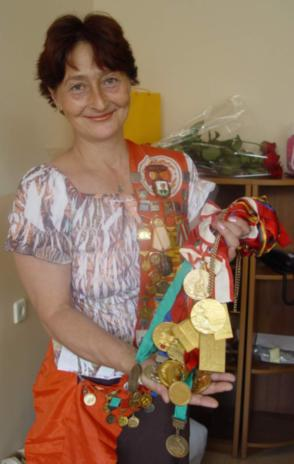

Svetlana Grozdova (USSR)
1976 Olympic Team Gold
Medalist
1974 and 1976 Moscow News AA Champion
1988 Sports Acrobatics Pairs World Champion

Medal Total
Olympic Games: 1 Gold
Svetlana was born on January 29, 1959. She began gymnastics at age 8 and was coached by Ruslan Lavrov in Rostov-on-Don. Her first major success was winning the 1974 Moscow News International, and she became a member of the Soviet national team that same year. Her best event was balance beam, where she was the first to perform a walkover across the width of the beam.
Svetlana graduated from the Rostov State Pedagogical Institute and left competitive gymnastics in 1980. She moved to Togliatti and began training in acrobatics with coach Vitaly Groisman. She earned a Master of Sports in acrobatics in 1981, and a Master of Sport, International Class in 1983. She and her
husband, Evgeny Mikhalichev, were the mixed pairs world champions for several
years. She retired from sports acrobatics in 1990.
After retiring from sports acrobatics, Svetlana performed in a circus and met
her second husband, Leonid Maretsky, in 1993. They married two years later
and settled in Moscow. Their son, Maksim, was born in 2000 with a
congenital heart problem. In September 2004 Maksim had successful surgery
to correct his heart problem. Svetlana and Leonid separated in December
2004. She currently works as a physical education instructor at a Moscow kindergarten.
Competition Results
1972 1973 1974 1976 1977 1978 1979 This page was created on September
12, 2004 and was last updated on March 25, 2026.
Jr. RSFSR Championships: 1st AA, 1st V, 1st FX
GDR-USSR Dual Meet: 1st V, 2nd B
Jr. Friendship Tournament (Druzhba): 1st Team, 4th AA, 1st B, 3rd UB,
7th V
Riga International: 3rd AA, 2nd FX, 3rd UB, 6th B
USSR-GDR-CSSR-HUN: 1st Team, 3rd AA
Antibes International: 1st AA, 1st B, 1st FX
Golden Sands International: 1st AA
Moscow News International: 1st AA, 2nd V, 2nd B, 2nd FX
USSR Championships: 1st Team, 4th AA, 1st B, 3rd FX
USSR Cup: 16th AA
Chunichi Cup: 5th AA
Moscow News International: 1st AA, 1st UB, 3rd B, 4th FX
Olympic Games: 1st Team, 9th AA (prelims)
Tokyo Cup: 1st UB, 1st FX
USSR Championships: 1st AA, 1st B
USSR Cup: 1st Team, 9th AA, 2nd B, 3rd FX
USSR-CSSR Dual Meet: 1st Team, 1st B, 1st FX
Army Club Championships: 1st AA
FRA-USSR-BUL: 1st Team, 1st AA
USSR Championships: 1st Team, 18th AA, 7th B, 7th FX
USSR Cup: 12th AA
Istanbul International: 1st AA
University Games: 1st Team, 4th AA, 2nd B
1984
World Championships (Sports Acro): 1st Pair
1985
European Championships (Sports Acro): 1st Pair
World Cup (Sports Acro): 1st Pair
1988
European Championships (Sports Acro): 1st Pair
USSR Championships (Sports Acro): 1st Pair
World Championships (Sports Acro): 1st Pair
© Gymn Forum